You can select the playes to see their scouting report/player profile/FBref profile
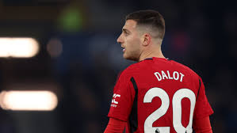
Diogo Dalot
is a Portuguese professional footballer who plays as a full-back for Premier League club Manchester United and the Portugal national team.
Player profile
FBref profile
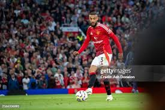
Noussair Mazraoui
is a professional footballer who plays as a full-back for Premier League club Manchester United and the Morocco national team.
Player profile
FBref profile
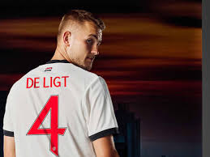
Matthijs de ligt
is a Dutch professional footballer who plays predominantly as a centre-back for Premier League club Manchester United and the Netherlands national team.
Player profile
FBref profile
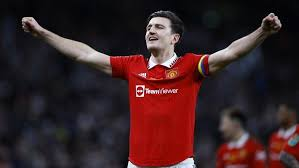
Harry Maguire
is an English professional footballer who plays as a centre-back for Premier League club Manchester United and the England national team.
Player profile
FBref profile
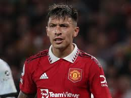
Lisandro Martinez
is an Argentine professional footballer who plays as a centre-back for Premier League club Manchester United and the Argentina national team.
Player profile
FBref profile
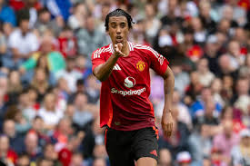
Leny Yoro
is a French professional footballer who plays as a centre-back for Premier League club Manchester United.
Player profile
FBref profile
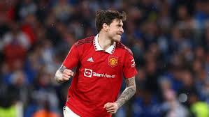
Victor Lindelof
is a Swedish professional footballer who plays as a defender for Premier League club Manchester United and captains the Sweden national team.
Player profile
FBref profile
Johnny Evans
is a Northern Irish professional footballer who plays as a centre back for Premier League club Manchester United and the Northern Ireland national team.
Player profile
FBref profile
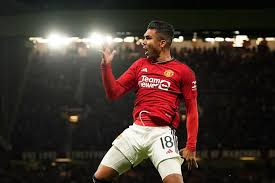
Casemiro
is a Brazilian professional footballer who plays as a defensive midfielder for Premier League club Manchester United and the Brazil national team.
Player profile
FBref profile
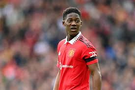
Kobbie Mainoo
is an English professional footballer who plays as a midfielder for Premier League club Manchester United and the England national team
Player profile
FBref profile
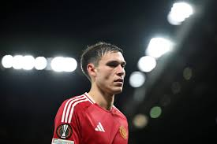
Manuel Ugarte
is a Uruguayan professional footballer who plays primarily as a defensive midfielder for premier league club manchester united and the Uruguay national team.
Player profile
FBref profile
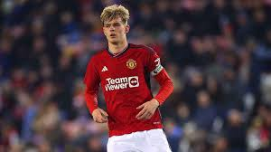
Toby collyer
is an English professional footballer who plays as a defensive midfielder for Manchester United.
click to visit
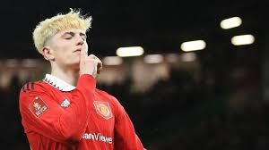
Alejandro Garnacho
is a professional footballer who plays as a winger for Premier League club Manchester United. Born in Spain, he plays for the Argentina national team.
Player profile
FBref profile
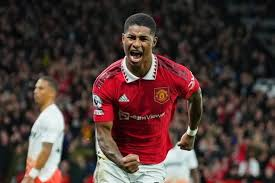
Marcus Rashford
is an English professional footballer who plays as a forward for Premier League club Manchester United and the England national team.
Player profile
FBref profile
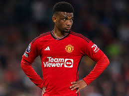
Amad Diallo
is an Ivorian professional footballer who plays as a winger or midfielder for Premier League club Manchester United and the Ivory Coast national team
Player profile
FBref profile
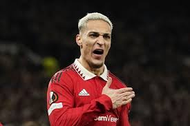
Antony
is a Brazilian professional footballer who plays as a right winger for Premier League club Manchester United and the Brazil national team.
Player profile
FBref profile